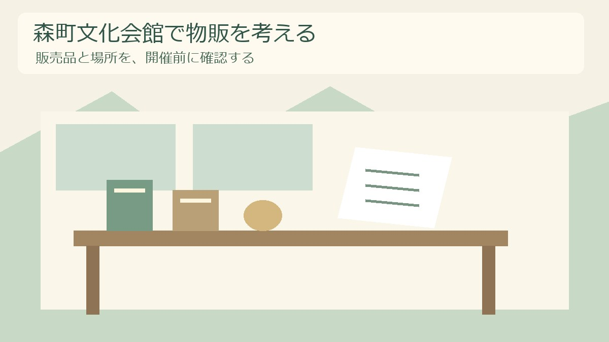
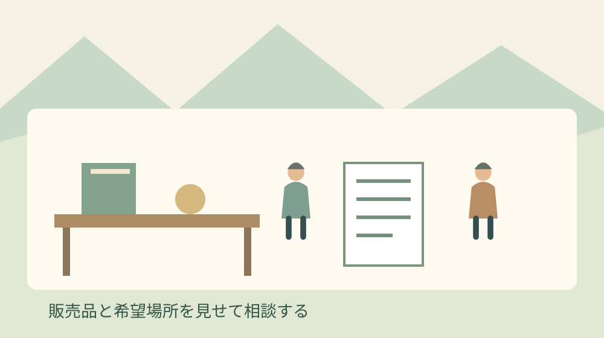
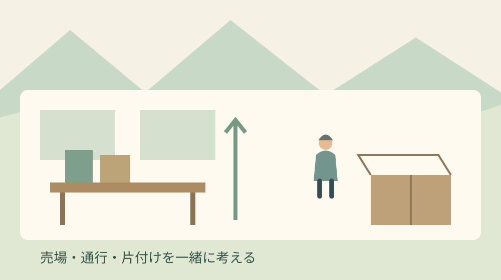

森町文化会館で物販｜開催前の許可確認

Q. 森町文化会館の催しで、作品や関連商品を売ってもよいですか？
森町文化会館の利用案内は、無許可の物品・飲食物販売を禁止しています。販売をすべて禁止する案内でも、部屋の予約だけで販売できる案内でもありません。今日、販売品・場所・時間・担当者を書き出し、会館へ販売の可否、必要な手続き、使用料の区分を確認してください。
作品を作り、会場へ運び、終演後には机を戻す。地域の催しを支える方は、舞台や展示の外側でも動いています。作品集や関連商品の売上が、次回の印刷代や活動費につながることを期待するのも自然です。ただ、売場を用意した後で条件が合わないと、収入の見込みも担当者の段取りも崩れます。
私は大石浩之（磐田市／不動産業）です。町の外から森町の家や暮らしに関わる者として、催しを続ける人の負担を考えています。今回の主題は会館の予約全般ではなく、作品や関連商品を販売する際の許可確認です。公式資料の確認日は2026年10月31日です。
販売の許可と、会場を使う手続きを分ける
森町公式「ご利用案内」は2026年10月15日更新です。「使用上の注意」には、無許可で広告を掲出・配布すること、寄附を募ること、物品や飲食物を販売することを禁止する旨が記載されています。物販を考える主催者が、先に押さえたい箇所です。
この案内を「館内では何も売れない」と読むのは正確ではありません。一方で、許可を得ればどの商品もどの場所でも販売できる、と保証する記載でもありません。個別の可否は、予定する販売内容と場所を伝えて会館へ確認する必要があります。
会館を利用する申請と、物販を含む計画の確認は混同しないようにします。私は、使用目的を伝える際に「関連商品の販売も予定」と付け加え、販売部分をどの書類にどう記すかまで尋ねる方法を勧めます。部屋を確保できたという連絡だけで、売場の準備へ進まないためです。
予約や準備・撤去時間を考えたい方は、森町文化会館の利用案内を読む記事も参照できます。本記事では、作品を何点売りたいか、どこに机を置きたいかという、販売部分の具体化に焦点を当てます。

入場無料でも、使用料の加算区分がある
森町公式「森町文化会館使用料」は2025年5月18日更新です。ホールの基本使用料には、入場料を徴収する場合や、商業宣伝・営業等を目的とする場合の加算表があります。商業宣伝・営業等の場合は、入場料徴収なしでも100％加算と示されています。
入場料がないから使用料の加算もない、とは限らない点が見落としやすいところです。ただし、催しの一部に物販があるという情報だけで、私が使用区分を決めることはできません。展示の目的、販売内容、主催者、使用する部屋を説明して、会館の判断を確認します。
100％加算は、料金総額が基本使用料の100％という意味ではありません。基本使用料に同額を足すという意味です。例えば基本部分を仮に1万円と置けば、その部分と100％加算分の合計は2万円です。これは割合の説明用の仮定であり、今回の催しの料金見積りではありません。
同じ料金案内には、研修施設等についても営業目的の使用や入場料徴収の場合の加算が載っています。ホールの表だけを見て、別の部屋にも同じ条件を当てはめないようにします。設備やその他の加算の有無を含め、最終額は利用計画に沿って会館へ確認してください。
私は、売上目標を考える前に「会場費がどの条件で変わるか」を欄にしておきたい。基本使用料だけを支出へ書き、物販収入は満額で見込むと、催しの後で赤字が分かることがあります。売れる数量の予測と、確認済みの固定費を区別しておくと、仕入れの判断も落ち着いてできます。
良い点：禁止の範囲と料金の入口が見える
森町文化会館の案内で私が良いと感じるのは、無許可の販売を避けるという入口が示されていることです。主催者は、何を売るのかを曖昧にしたまま会場へ持ち込む前に相談できます。会館側も計画を知らされれば、設備や通行への影響を確認する話を始めやすくなります。
料金表で営業等の区分が分かれていることも、私は評価します。文化活動の会場だから販売の収入は考えてはいけない、という読み方ではなく、費用が変わる可能性を先に予算へ置けます。主催者にとって、費用の入口が公開されていることは、会員へ説明する材料になります。
現行の利用案内では、施設利用の申請方法として、森町公共施設予約システムと文化会館窓口が案内されています。電話・口頭だけでの使用許可申請は受け付けない旨もあります。相談して内容を確かめることと、案内された方法で申請することは別に管理します。
私は、相談の入口と正式な提出先を分けてメモできる仕組みがよいと思います。初めて担当する方でも、聞いた内容をそのまま次の担当者へ渡せます。電話で話が通じたという安心だけで終えず、何を提出すれば手続きが進むのかを書き留めるところまでを一つの仕事にします。
注文したい点：物販の確認を担当者の記憶に残さない
物販を伴う催しで私が注文したいのは、確認結果を一人の記憶だけに置かないことです。代表者が会館へ相談し、当日は別の人が商品を並べることも想定できます。今日できる一歩は、品目、売場、時間、確認日を一枚に書き、当日の担当者へ同じ紙を渡すことです。
今回確認した公式本文には、物販専用の申請様式、審査に必要な日数、個別商品の販売可否は明記されていません。施設利用の申請期間を、そのまま物販許可の締切と呼ぶこともできません。確認できない制度名や期限を作って、担当者へ案内することは避けます。
私は、会館への質問を増やしすぎることにも迷いがあります。品目を一つ追加するたびに長い資料を送り直すのでは、主催者にも受け取る側にも負担です。だから初回は品目と場所を中心にまとめ、どの程度の変更で再相談が必要かを併せて聞く方法が現実的だと考えます。
確認したい内容は、許可の可否だけではありません。どこに記載するのか、誰が申請するのか、回答までに何を揃えるのかもあります。「何日前までなら間に合いますか」とだけ聞くより、開催日と準備状況を伝え、必要な手順を確認する方が話を具体化できます。
今日書くのは、販売品・売場・時間・担当者
物販の相談メモは、販売内容を会館へ伝えるための下書きです。以下は私の提案であり、町が定めた専用様式ではありません。会館から記入方法を指定された場合は、その案内に従います。未定の項目を推測で埋めず、未定と書いたまま相談する使い方です。
- 催しの名称、開催日、主催者、使用する部屋。
- 販売する品目と数量の見込み、価格の付け方。
- 売場にしたい場所と、机・展示台の大きさ。
- 販売時間、搬入と撤去の予定。
- 販売の担当者、連絡先、当日の責任者。
- 広告の掲出・配布、飲食物、寄附募集の予定の有無。
品目は「グッズ」とまとめず、作品集、絵はがき、手作り小物など、実際に扱う物が分かる言葉で書きます。ここに挙げた物が販売可能という意味ではありません。会館が内容を確認できる粒度にするための例です。写真があれば、説明用に使えるかも相談できます。
売場は「会場内」だけでなく、使用する部屋のどのあたりを希望するかまで書きます。入口の近く、受付の隣など、主催者が便利だと思う場所でも、通行や他の利用との関係があります。使用できる範囲を確かめる前に、ロビーや通路を販売場所として告知しないようにします。
時間は開演前、休憩中、終演後などに分けて考えます。終演後に人が集中する見込みなら、販売を担当する人と出口を案内する人を分けられるか検討します。これは私の運営上の提案です。会館がどの配置を認めるかは、平面図や机の予定を示して確認します。
問い合わせの文章は長くする必要はありません。「作品展示に合わせて作品集を販売したい。販売品と希望場所は別紙のとおりです。可否、必要書類、使用料の区分を確認したい」といった下書きで、聞きたい項目を分けます。実際の商品や日時へ置き換えて使う想定です。

広告・寄附・飲食を、物販の許可にまとめない
森町文化会館の使用上の注意は、物品販売だけでなく広告の掲出・配布や寄附募集にも触れています。販売の相談に回答を得ても、その回答がポスター掲出や募金箱の設置まで含むとは読み替えないことです。予定している行為を、相談メモの別の欄に記します。
私は、主催者が「売場まわりのこと」と一括りにしやすい部分ほど分けたいと考えます。商品説明の紙を机へ置くのか、壁へ貼るのか、来場者へ手渡すのかでも、相手へ伝える情報が変わります。許可された場所と方法を、飾り付け担当にも同じ内容で共有します。
飲食物を販売する計画があるなら、品目と提供方法も説明に含めます。会館で販売できるかという問いと、食品の扱いに必要な確認を一つの返事で済ませないためです。関連する相談の整理には、催しの出店で許可・届出を確認する記事を用意しています。
飲食を伴う場合、使う容器と回収の担当も収支に関係します。今回は食品提供の個別条件を確認した記事ではないため、販売できる品目を列挙して保証しません。片付けの負担を比べる際は、使い捨てとリユースの食器比較を別の材料として読めます。
販売収入と、先に支払うお金を分けて考える
物販の予算は、販売できると確認した後も、売上と手元に残る金額を分けて組むのが私の考えです。商品の製作・仕入れ、運搬、包装、決済に必要な準備などを書き出します。会場費の見積りを含め、確認済みの支出と、これから発生するかもしれない支出を区別します。
例えば売る予定の数量を、そのまま全数売れる予測にしないことです。持ち帰る在庫がある場合は、誰が保管するのか、次の機会に使えるのかも決めます。これは利益を増やす話だけではありません。閉会後に残った箱を、いつも同じ方の車や家へ預ける負担を避けるためです。
会館の使用区分がまだ分からない時点では、使用料を確定額として団体へ報告しません。基本部分、加算の確認待ち、備品の確認待ちという分け方でも構いません。私なら、最終見積りが出るまで商品を何点作るかの決定を保留し、変更しにくい注文を先に増やさないようにします。
売上の受け取りも、当日の担当者へ丸投げしない方がよいと考えます。現金を扱うなら、開始時の釣り銭と終了時の集計を誰が確認するかを決めます。支払方法を掲示する場合も、会館への確認内容に合わせます。個人の財布と団体の売上を混ぜないだけでも、翌日の説明が楽になります。
対案・結論：許可と条件を受けてから売場を固める
森町文化会館の物販は、販売品と希望場所を示して確認し、回答された範囲で計画を固める順番を勧めます。売上を催しの支えにしたいからこそ、許可の確認を後回しにしない。今日の成果は商品を発注することではなく、会館へ具体的に相談できる状態を作ることです。
回答を受けたら、許可された内容、条件、未回答の点を分けて記録します。口頭で聞いた内容に曖昧な箇所があれば、理解が合っているか確かめます。専用の書類を求められたら、その名称と提出先をメモします。私が一律の書式や審査日数を補って案内することはしません。
条件に合わない場合は、品目を減らす、場所を変える、今回は販売を行わないなどの案を検討します。どの案なら認められるかは再確認が必要です。無料配布へ変えれば自動的に全て解決するとも考えません。広告配布など別の注意事項との関係も、会館へ説明して確認します。
主催者の仕事は、売れる机を置くところで終わりません。使用料案内では準備と片付けも使用時間に含まれます。売場の撤収、残った商品の搬出、机の返却までを予定へ入れ、終了時刻に誰が残れるかを決めます。販売担当だけに最後の作業を集中させない段取りを提案します。
大石の視点：収入を残すには、条件を先に見せる
地域の文化活動に収入の入口があることを、私は前向きに捉えています。作り手の作品が人に渡り、次の活動の費用につながる余地は残したい。ただし、その収入を頼りに準備を進めるなら、使える場所と費用を先に確かめる方が、担当者の家計と時間を守れます。
不動産の仕事でも、使いたいという希望と、その場所で認められる使い方を分けて考えます。私は今回の販売許可を取得した当事者ではありません。公開資料を読み、一事業者の意見として述べています。森町文化会館で何が売れるかを、経験した事実のように断言する材料はありません。
今日、販売品と場所を一枚に書いてください。許可、必要な手続き、使用料の区分を会館へ確認するための一枚です。すぐに催しの全てを決める必要はありません。誰が何を確認するかが決まれば、作品を作る人も会場を準備する人も、次に動くための材料を持てます。
よくある質問
入場無料の催しなら、自由に物販できますか？
入場無料だけでは、販売の可否も使用料の区分も決まりません。森町文化会館の利用案内は無許可の物品・飲食物販売を禁止しています。また、ホールの料金表には、営業等の目的なら入場料徴収なしでも100％加算の区分があります。販売品と場所、催しの目的を会館へ伝え、販売の許可と費用を別々に確認してください。
部屋の予約が済めば、物販の許可も済んでいますか？
部屋の予約が済んだという情報だけでは、物販を含む計画が確認されたか分かりません。販売品、希望場所、時間、担当者を会館へ伝え、どの申請に何を記載するか確認してください。回答が広告掲出や寄附募集まで含むとも読み替えず、予定する行為を分けて説明します。当日の販売担当にも、許可された範囲と条件を共有します。
物販の申請書や締切は、どこで確認できますか？
今回確認した公式本文には、物販専用の申請様式や審査日数は明記されていません。通常の施設利用申請の期限を、そのまま物販許可の締切とは断定できません。開催日、販売品、場所を整理して会館へ必要書類と提出時期を尋ねてください。電話で相談することと正式な利用申請は別なので、案内された提出方法まで確認します。
出典・確認日
- 森町：ご利用案内（2026年10月31日確認）
- 森町：森町文化会館使用料（2026年10月31日確認）
催しの予定や料金・制度は変更される場合があります。個別の利用条件は主催者へ、専門的な判断が必要な事項は適切な専門家へご相談ください。